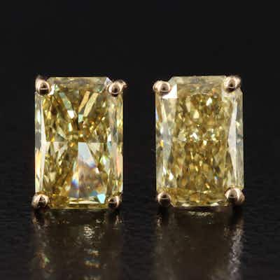

OUTPRICED14K 3.08 CTW Lab Grown Fancy Intense Yellow Diamond Stud Earrings w/IGI Reports
14K yellow gold stud earrings set with two radiant-cut lab-grown fancy intense yellow diam
3 min left
Current bid$810 · 47 bids
Est. value$818
Your max bid$503
All-in at max$613
Projected close$812
Margin at bid−$149
Details & price history →